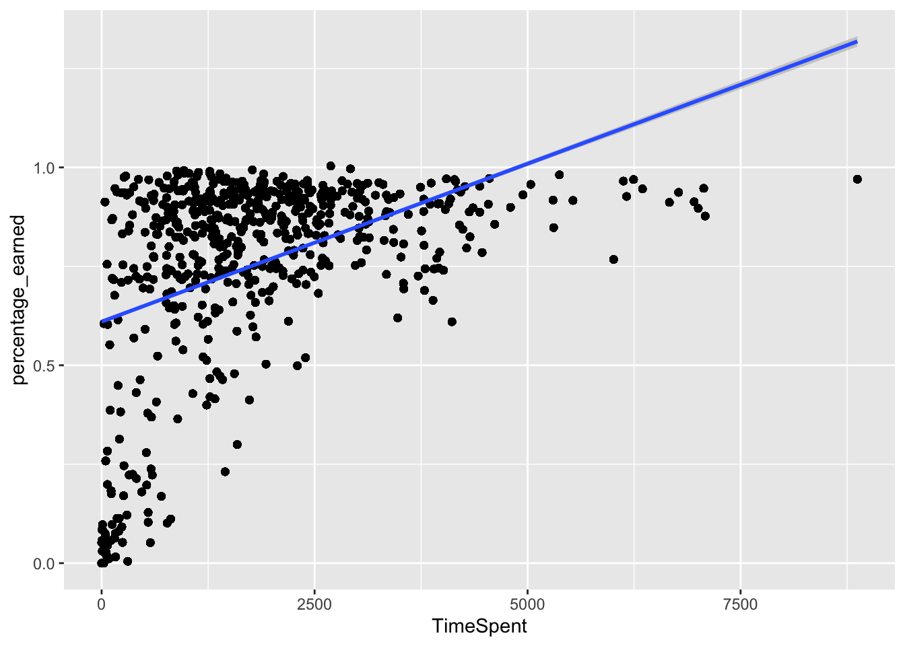

11 Walkthrough 01: Title Here
11.1 Introduction
In the 2015-2016 and 2016-2017 school years, researchers at Michigan State University carried out a study on students’ motivation to learn in online science classes. The online science classes were part of a statewide online course provider designed to supplement (and not replace) students’ enrollment in their local school. For example, students may choose to enroll in an online physics class because one was not offered at their school (or they were not able to take it given their schedule).
The study involved a number of different data sources which were brought to bear to understand students’ motivation:
- A self-report survey for three distinct but related aspects of students’ motivation
- Log-trace data, such as data output from the learning management system
- Achievement-related and grade book data
- Discussion board data
- Achievement-related (i.e., final grade) data
First, these different data sources will be described in terms of how they were provided by the school.
11.2 Data Sources
11.2.1 1. Self-Report Survey
This was data collected before the start of the course via self-report survey. The survey included 10 items, each corresponding to one of three measures, namely, for interest, utility value, and perceived competence:
- I think this course is an interesting subject. (Interest)
- What I am learning in this class is relevant to my life. (Utility value)
- I consider this topic to be one of my best subjects. (Perceive competence)
- I am not interested in this course. (Interest - reverse coded)
- I think I will like learning about this topic. (Interest)
- I think what we are studying in this course is useful for me to know. (Utility value)
- I don’t feel comfortable when it comes to answering questions in this area. (Perceived competence)
- I think this subject is interesting. (Interest)
- I find the content of this course to be personally meaningful. (Utility value)
- I’ve always wanted to learn more about this subject. (Interest)
11.2.2 2. Log-Trace Data
Log-trace data is data generated from our interactions with digital technologies. In education, an increasingly common source of log-trace data is that generated from interactions with learning management systems. The data for this walk-through is a summary of log-trace data, namely, the number of minutes students spent on the course. Thus, while this data is rich, you can imagine even more complex sources of log-trace data (i.e. timestamps associated with when students started and stopped accessing the course!).
11.2.4 4. Discussion board data
Discussion board data is both rich and unstructured, in that it is primarily in the form of written text. We examine a small subset of the discussion board data in this walkthrough.
11.3 Load Packages
This analysis uses R packages, which are collections of R code that help users code more efficiently. We load these packages with the function library. In particular, the packages we’ll use will help us load Excel files, organize the structure of the data, work with dates in the data, and navigate file directories.
##
## Attaching package: 'lubridate'## The following object is masked from 'package:base':
##
## date## here() starts at /Users/shortessay/data-science-in-education##
## Attaching package: 'here'## The following object is masked from 'package:lubridate':
##
## hereThis code chunk loads the log trace data using the read_csv function. Note that we call read_csv three times, once for each of the three logtrace datasets. We assign each of the datasets a name using <-.
11.4 Import Data
# Gradebook and log-trace data for F15 and S16 semesters
s12_course_data <- read_csv(
here(
"data",
"online-science-motivation",
"raw",
"s12-course-data.csv"
)
)## Parsed with column specification:
## cols(
## CourseSectionOrigID = col_character(),
## Bb_UserPK = col_double(),
## EnrollmentStatus = col_character(),
## EnrollmentReason = col_character(),
## Gender = col_character(),
## FinalGradeCEMS = col_double(),
## Gradebook_Item = col_character(),
## Item_Position = col_double(),
## Gradebook_Type = col_character(),
## Gradebook_Date = col_character(),
## Grade_Category = col_character(),
## Status = col_logical(),
## Points_Earned = col_character(),
## Points_Attempted = col_double(),
## Points_Possible = col_double(),
## last_access_date = col_time(format = "")
## )## Warning: 19491 parsing failures.
## row col expected actual file
## 1 last_access_date valid date 33:50.5 '/Users/shortessay/data-science-in-education/data/online-science-motivation/raw/s12-course-data.csv'
## 2 last_access_date valid date 33:50.5 '/Users/shortessay/data-science-in-education/data/online-science-motivation/raw/s12-course-data.csv'
## 3 last_access_date valid date 33:50.5 '/Users/shortessay/data-science-in-education/data/online-science-motivation/raw/s12-course-data.csv'
## 4 last_access_date valid date 33:50.5 '/Users/shortessay/data-science-in-education/data/online-science-motivation/raw/s12-course-data.csv'
## 5 last_access_date valid date 33:50.5 '/Users/shortessay/data-science-in-education/data/online-science-motivation/raw/s12-course-data.csv'
## ... ................ .......... ....... ....................................................................................................
## See problems(...) for more details.# Pre-survey for the F15 and S16 semesters
s12_pre_survey <- read_csv(
here(
"data",
"online-science-motivation",
"raw",
"s12-pre-survey.csv"
)
) ## Parsed with column specification:
## cols(
## RespondentId = col_double(),
## StartDate = col_character(),
## CompletedDate = col_character(),
## LanguageCode = col_character(),
## opdata_CourseID = col_character(),
## opdata_username = col_character(),
## Q1MaincellgroupRow1 = col_double(),
## Q1MaincellgroupRow2 = col_double(),
## Q1MaincellgroupRow3 = col_double(),
## Q1MaincellgroupRow4 = col_double(),
## Q1MaincellgroupRow5 = col_double(),
## Q1MaincellgroupRow6 = col_double(),
## Q1MaincellgroupRow7 = col_double(),
## Q1MaincellgroupRow8 = col_double(),
## Q1MaincellgroupRow9 = col_double(),
## Q1MaincellgroupRow10 = col_double()
## )# Log-trace data for F15 and S16 semesters - ts is for time spent
s12_time_spent <- read_csv(
here(
"data",
"online-science-motivation",
"raw",
"s12-course-minutes.csv"
)
)## Parsed with column specification:
## cols(
## CourseID = col_double(),
## CourseSectionID = col_double(),
## CourseSectionOrigID = col_character(),
## Bb_UserPK = col_double(),
## CUPK = col_double(),
## TimeSpent = col_double()
## )11.5 Viewing the Data
Now that we’ve successfully loaded all three logtrace datasets, we can visually inspect the data by typing the names that we assigned to each dataset.
## # A tibble: 1,102 x 16
## RespondentId StartDate CompletedDate LanguageCode opdata_CourseID
## <dbl> <chr> <chr> <chr> <chr>
## 1 426746 2015.08.… <NA> en FrScA-S116-01
## 2 426775 2015.08.… 2015.08.24 1… en BioA-S116-01
## 3 427483 2015.08.… <NA> en OcnA-S116-03
## 4 429883 2015.09.… 2015.09.02 1… en AnPhA-S116-01
## 5 430158 2015.09.… 2015.09.03 9… en AnPhA-S116-01
## 6 430161 2015.09.… 2015.09.03 9… en AnPhA-S116-02
## 7 430162 2015.09.… 2015.09.03 9… en AnPhA-T116-01
## 8 430167 2015.09.… 2015.09.03 9… en BioA-S116-01
## 9 430170 2015.09.… 2015.09.03 9… en BioA-T116-01
## 10 430172 2015.09.… 2015.09.03 9… en PhysA-S116-01
## # … with 1,092 more rows, and 11 more variables: opdata_username <chr>,
## # Q1MaincellgroupRow1 <dbl>, Q1MaincellgroupRow2 <dbl>,
## # Q1MaincellgroupRow3 <dbl>, Q1MaincellgroupRow4 <dbl>,
## # Q1MaincellgroupRow5 <dbl>, Q1MaincellgroupRow6 <dbl>,
## # Q1MaincellgroupRow7 <dbl>, Q1MaincellgroupRow8 <dbl>,
## # Q1MaincellgroupRow9 <dbl>, Q1MaincellgroupRow10 <dbl>## # A tibble: 29,711 x 16
## CourseSectionOr… Bb_UserPK EnrollmentStatus EnrollmentReason Gender
## <chr> <dbl> <chr> <chr> <chr>
## 1 AnPhA-S116-01 60186 Approved/Enroll… Course Unavaila… M
## 2 AnPhA-S116-01 60186 Approved/Enroll… Course Unavaila… M
## 3 AnPhA-S116-01 60186 Approved/Enroll… Course Unavaila… M
## 4 AnPhA-S116-01 60186 Approved/Enroll… Course Unavaila… M
## 5 AnPhA-S116-01 60186 Approved/Enroll… Course Unavaila… M
## 6 AnPhA-S116-01 60186 Approved/Enroll… Course Unavaila… M
## 7 AnPhA-S116-01 60186 Approved/Enroll… Course Unavaila… M
## 8 AnPhA-S116-01 60186 Approved/Enroll… Course Unavaila… M
## 9 AnPhA-S116-01 60186 Approved/Enroll… Course Unavaila… M
## 10 AnPhA-S116-01 60186 Approved/Enroll… Course Unavaila… M
## # … with 29,701 more rows, and 11 more variables: FinalGradeCEMS <dbl>,
## # Gradebook_Item <chr>, Item_Position <dbl>, Gradebook_Type <chr>,
## # Gradebook_Date <chr>, Grade_Category <chr>, Status <lgl>,
## # Points_Earned <chr>, Points_Attempted <dbl>, Points_Possible <dbl>,
## # last_access_date <time>## # A tibble: 598 x 6
## CourseID CourseSectionID CourseSectionOrigID Bb_UserPK CUPK TimeSpent
## <dbl> <dbl> <chr> <dbl> <dbl> <dbl>
## 1 27 17146 OcnA-S116-01 44638 190682 1383.
## 2 27 17146 OcnA-S116-01 54346 194259 1191.
## 3 27 17146 OcnA-S116-01 57981 196014 3343.
## 4 27 17146 OcnA-S116-01 66740 190463 965.
## 5 27 17146 OcnA-S116-01 67920 191593 4095.
## 6 27 17146 OcnA-S116-01 85355 190104 595.
## 7 27 17146 OcnA-S116-01 85644 190685 1632.
## 8 27 17146 OcnA-S116-01 86349 191713 1601.
## 9 27 17146 OcnA-S116-01 86460 191887 1891.
## 10 27 17146 OcnA-S116-01 87970 194256 3123.
## # … with 588 more rows11.6 Process Data
11.6.1 1. Self-Report Survey
Often, survey data needs to be processed in order to be (most) useful. Here, we process the self-report items into three scales, for: interest, self-efficacy, and utility value. We do this by
- Renaming the question variables to something more manageable
- Reversing the response scales on questions 4 and 7
- Categorizing each question into a measure
- Computing the mean of each measure
Let’s take these steps in order:
- Rename the question columns to something much simpler:
s12_pre_survey <- s12_pre_survey %>%
# Rename the qustions something easier to work with because R is case sensitive
# and working with variable names in mix case is prone to error
rename(q1 = Q1MaincellgroupRow1,
q2 = Q1MaincellgroupRow2,
q3 = Q1MaincellgroupRow3,
q4 = Q1MaincellgroupRow4,
q5 = Q1MaincellgroupRow5,
q6 = Q1MaincellgroupRow6,
q7 = Q1MaincellgroupRow7,
q8 = Q1MaincellgroupRow8,
q9 = Q1MaincellgroupRow9,
q10 = Q1MaincellgroupRow10) %>%
# Convert all question responses to numeric
mutate_at(vars(q1:q10), list(~ as.numeric(.)))- Next we’ll reverse the scale of the survey responses on questions 4 and 7 so the responses for all questions can be interpreted in the same way. Rather than write a lot of code once to reverse the scales for question 4 then writing it again to reverse the scales on question 7, we’ll build a function that does that job for us. Then we’ll use the same function for question 4 and question 7. This will result in much less code, plus it will make it easier for us to change in the future.
# This part of the code is where we write the function:
# Function for reversing scales
reverse_scale <- function(question) {
# Reverses the response scales for consistency
# Args:
# question: survey question
# Returns: a numeric converted response
# Note: even though 3 is not transformed, case_when expects a match for all
# possible conditions, so it's best practice to label each possible input
# and use TRUE ~ as the final statement returning NA for unexpected inputs
x <- case_when(question == 1 ~ 5,
question == 2 ~ 4,
question == 4 ~ 2,
question == 5 ~ 1,
question == 3 ~ 3,
TRUE ~ NA_real_)
x
}
# And here's where we use that function to reverse the scales
# Reverse scale for questions 4 and 7
s12_pre_survey <- s12_pre_survey %>%
mutate(q4 = reverse_scale(q4),
q7 = reverse_scale(q7))- We’ll accomplish the last two steps in one chunk of code. First we’ll create a column called
measureand we’ll fill that column with one of three question categories:
int: interestuv: utility valuepc: self efficacy
After that we’ll find the mean response of each category using mean function.
# Add measure variable
s12_measure_mean <- s12_pre_survey %>%
# Gather questions and responses
gather(question, response, c(q1:q10)) %>%
mutate(
# Here's where we make the column of question categories
measure = case_when(
question %in% c("q1", "q4", "q5", "q8", "q10") ~ "int",
question %in% c("q2", "q6", "q9") ~ "uv",
question %in% c("q3", "q7") ~ "pc",
TRUE ~ NA_character_
)) %>%
group_by(measure) %>%
summarise(
# Here's where we compute the mean of the responses
# Mean response for each measure
mean_response = mean(response, na.rm = TRUE),
# Percent of each measure that had NAs in the response field
percent_NA = mean(is.na(response))
)
s12_measure_mean## # A tibble: 3 x 3
## measure mean_response percent_NA
## <chr> <dbl> <dbl>
## 1 int 4.26 0.171
## 2 pc 3.65 0.170
## 3 uv 3.76 0.17011.6.2 2. Course Data
We also can process the course data in order to obtain more information.
# split course section into components
s12_course_data <- s12_course_data %>%
separate(col = CourseSectionOrigID,
into = c('subject', 'semester', 'section'),
sep = '-',
remove = FALSE)This led to pulling out the subject, semester, and section from the course ID; variables that we can use later on.
11.7 Joining the Data
To join the course data and pre-survey data, we need to create similar keys. In other words, our goal here is to have one variable that matches across both datasets, so that we can merge the datasets on the basis of that variable.
For these data, both have variables for the course and the student, though they have different names in each. Our first goal will be to rename two variables in each of our datasets so that they will match. One variable will correspond to the course, and the other will correspond to the student. We are not changing anything in the data itself at this step - instead, we are just cleaning it up so that we can look at the data all in one place.
Let’s start with the pre-survey data. We will rename RespondentID and opdata_CourseID to be student_id and course_id, respectively.
s12_pre_survey <- s12_pre_survey %>%
rename(student_id = RespondentId,
course_id = opdata_CourseID)
s12_pre_survey## # A tibble: 1,102 x 16
## student_id StartDate CompletedDate LanguageCode course_id
## <dbl> <chr> <chr> <chr> <chr>
## 1 426746 2015.08.… <NA> en FrScA-S1…
## 2 426775 2015.08.… 2015.08.24 1… en BioA-S11…
## 3 427483 2015.08.… <NA> en OcnA-S11…
## 4 429883 2015.09.… 2015.09.02 1… en AnPhA-S1…
## 5 430158 2015.09.… 2015.09.03 9… en AnPhA-S1…
## 6 430161 2015.09.… 2015.09.03 9… en AnPhA-S1…
## 7 430162 2015.09.… 2015.09.03 9… en AnPhA-T1…
## 8 430167 2015.09.… 2015.09.03 9… en BioA-S11…
## 9 430170 2015.09.… 2015.09.03 9… en BioA-T11…
## 10 430172 2015.09.… 2015.09.03 9… en PhysA-S1…
## # … with 1,092 more rows, and 11 more variables: opdata_username <chr>,
## # q1 <dbl>, q2 <dbl>, q3 <dbl>, q4 <dbl>, q5 <dbl>, q6 <dbl>, q7 <dbl>,
## # q8 <dbl>, q9 <dbl>, q10 <dbl>Looks better now!
Let’s proceed to the course data. Our goal is to rename two variables that correspond to the course and the student so that we can match with the other variables we just created for the pre-survey data.
s12_course_data <- s12_course_data %>%
rename(student_id = Bb_UserPK,
course_id = CourseSectionOrigID)
s12_course_data## # A tibble: 29,711 x 19
## course_id subject semester section student_id EnrollmentStatus
## <chr> <chr> <chr> <chr> <dbl> <chr>
## 1 AnPhA-S1… AnPhA S116 01 60186 Approved/Enroll…
## 2 AnPhA-S1… AnPhA S116 01 60186 Approved/Enroll…
## 3 AnPhA-S1… AnPhA S116 01 60186 Approved/Enroll…
## 4 AnPhA-S1… AnPhA S116 01 60186 Approved/Enroll…
## 5 AnPhA-S1… AnPhA S116 01 60186 Approved/Enroll…
## 6 AnPhA-S1… AnPhA S116 01 60186 Approved/Enroll…
## 7 AnPhA-S1… AnPhA S116 01 60186 Approved/Enroll…
## 8 AnPhA-S1… AnPhA S116 01 60186 Approved/Enroll…
## 9 AnPhA-S1… AnPhA S116 01 60186 Approved/Enroll…
## 10 AnPhA-S1… AnPhA S116 01 60186 Approved/Enroll…
## # … with 29,701 more rows, and 13 more variables: EnrollmentReason <chr>,
## # Gender <chr>, FinalGradeCEMS <dbl>, Gradebook_Item <chr>,
## # Item_Position <dbl>, Gradebook_Type <chr>, Gradebook_Date <chr>,
## # Grade_Category <chr>, Status <lgl>, Points_Earned <chr>,
## # Points_Attempted <dbl>, Points_Possible <dbl>, last_access_date <time>Now that we have two variables that are consistent across both datasets - we have called them “course_id” and “student_id” - we can join these using the dplyr function, left_join().
Let’s save our joined data as a new object called “dat.”
## # A tibble: 29,711 x 33
## course_id subject semester section student_id EnrollmentStatus
## <chr> <chr> <chr> <chr> <dbl> <chr>
## 1 AnPhA-S1… AnPhA S116 01 60186 Approved/Enroll…
## 2 AnPhA-S1… AnPhA S116 01 60186 Approved/Enroll…
## 3 AnPhA-S1… AnPhA S116 01 60186 Approved/Enroll…
## 4 AnPhA-S1… AnPhA S116 01 60186 Approved/Enroll…
## 5 AnPhA-S1… AnPhA S116 01 60186 Approved/Enroll…
## 6 AnPhA-S1… AnPhA S116 01 60186 Approved/Enroll…
## 7 AnPhA-S1… AnPhA S116 01 60186 Approved/Enroll…
## 8 AnPhA-S1… AnPhA S116 01 60186 Approved/Enroll…
## 9 AnPhA-S1… AnPhA S116 01 60186 Approved/Enroll…
## 10 AnPhA-S1… AnPhA S116 01 60186 Approved/Enroll…
## # … with 29,701 more rows, and 27 more variables: EnrollmentReason <chr>,
## # Gender <chr>, FinalGradeCEMS <dbl>, Gradebook_Item <chr>,
## # Item_Position <dbl>, Gradebook_Type <chr>, Gradebook_Date <chr>,
## # Grade_Category <chr>, Status <lgl>, Points_Earned <chr>,
## # Points_Attempted <dbl>, Points_Possible <dbl>,
## # last_access_date <time>, StartDate <chr>, CompletedDate <chr>,
## # LanguageCode <chr>, opdata_username <chr>, q1 <dbl>, q2 <dbl>,
## # q3 <dbl>, q4 <dbl>, q5 <dbl>, q6 <dbl>, q7 <dbl>, q8 <dbl>, q9 <dbl>,
## # q10 <dbl>Just one more data frame to merge:
s12_time_spent <- s12_time_spent %>%
rename(student_id = Bb_UserPK,
course_id = CourseSectionOrigID)
s12_time_spent <- s12_time_spent %>%
mutate(student_id = as.integer(student_id))
dat <- dat %>%
left_join(s12_time_spent,
by = c("student_id", "course_id"))Note that they’re now combined, even though the course data has many more rows: The pre_survey data has been joined for each student by course combination.
We have a pretty large data frame! Let’s take a quick look.
## # A tibble: 29,711 x 37
## course_id subject semester section student_id EnrollmentStatus
## <chr> <chr> <chr> <chr> <dbl> <chr>
## 1 AnPhA-S1… AnPhA S116 01 60186 Approved/Enroll…
## 2 AnPhA-S1… AnPhA S116 01 60186 Approved/Enroll…
## 3 AnPhA-S1… AnPhA S116 01 60186 Approved/Enroll…
## 4 AnPhA-S1… AnPhA S116 01 60186 Approved/Enroll…
## 5 AnPhA-S1… AnPhA S116 01 60186 Approved/Enroll…
## 6 AnPhA-S1… AnPhA S116 01 60186 Approved/Enroll…
## 7 AnPhA-S1… AnPhA S116 01 60186 Approved/Enroll…
## 8 AnPhA-S1… AnPhA S116 01 60186 Approved/Enroll…
## 9 AnPhA-S1… AnPhA S116 01 60186 Approved/Enroll…
## 10 AnPhA-S1… AnPhA S116 01 60186 Approved/Enroll…
## # … with 29,701 more rows, and 31 more variables: EnrollmentReason <chr>,
## # Gender <chr>, FinalGradeCEMS <dbl>, Gradebook_Item <chr>,
## # Item_Position <dbl>, Gradebook_Type <chr>, Gradebook_Date <chr>,
## # Grade_Category <chr>, Status <lgl>, Points_Earned <chr>,
## # Points_Attempted <dbl>, Points_Possible <dbl>,
## # last_access_date <time>, StartDate <chr>, CompletedDate <chr>,
## # LanguageCode <chr>, opdata_username <chr>, q1 <dbl>, q2 <dbl>,
## # q3 <dbl>, q4 <dbl>, q5 <dbl>, q6 <dbl>, q7 <dbl>, q8 <dbl>, q9 <dbl>,
## # q10 <dbl>, CourseID <dbl>, CourseSectionID <dbl>, CUPK <dbl>,
## # TimeSpent <dbl>It looks like we have nearly 30,000 observations from 30 variables.
Now that our data are ready to go, we can start to ask some questions of the data.
11.8 Visualizing the Data
One thing we might be wondering is how time spent on course is related to students’ final grade. Let’s first calculate the percentage of points students earned as a measure of their final grade (noting that the teacher may have assigned a different grade–or weighted their grades in ways not reflected through the points).
dat <- dat %>%
group_by(student_id, course_id) %>%
mutate(Points_Earned = as.integer(Points_Earned)) %>%
summarize(total_points_possible = sum(Points_Possible, na.rm = TRUE),
total_points_earned = sum(Points_Earned, na.rm = TRUE)) %>%
mutate(percentage_earned = total_points_earned/total_points_possible) %>%
ungroup() %>%
left_join(dat) # note that we join this back to the original data frame to retain all of the variables## Joining, by = c("student_id", "course_id")11.8.1 Visualization of the relationship between time spent on course and percentage of points earned
## Warning: Removed 228 rows containing missing values (geom_point).
There appears to be some relationship. What if we added a line of best fit - a linear model?
## Warning: Removed 228 rows containing non-finite values (stat_smooth).## Warning: Removed 228 rows containing missing values (geom_point).
So, it appears that the more time students spent on the course, the more points they earned.
11.9 Modeling the Data
We can find out exactly what the relationship is using a linear model.
##
## Call:
## lm(formula = percentage_earned ~ TimeSpent, data = dat)
##
## Residuals:
## Min 1Q Median 3Q Max
## -0.63001 -0.07894 0.05366 0.15742 0.34544
##
## Coefficients:
## Estimate Std. Error t value Pr(>|t|)
## (Intercept) 6.102e-01 2.158e-03 282.77 <2e-16 ***
## TimeSpent 7.983e-05 9.399e-07 84.94 <2e-16 ***
## ---
## Signif. codes: 0 '***' 0.001 '**' 0.01 '*' 0.05 '.' 0.1 ' ' 1
##
## Residual standard error: 0.2236 on 29481 degrees of freedom
## (228 observations deleted due to missingness)
## Multiple R-squared: 0.1966, Adjusted R-squared: 0.1966
## F-statistic: 7214 on 1 and 29481 DF, p-value: < 2.2e-1611.10 But what about different courses?
Is there course-specific differences in how much time students spend on the course as well as in how time spent is related to the percentage of points students earned?
## Warning: Removed 228 rows containing missing values (geom_point).
ggplot(dat, aes(x = TimeSpent, y = percentage_earned, color = course_id)) +
geom_point() +
geom_smooth(method = "lm")## Warning: Removed 228 rows containing non-finite values (stat_smooth).## Warning: Removed 228 rows containing missing values (geom_point).
There appears to be so. One way we can test is to use what is called a multi-level model. This requires a new package; one of the most common for estimating these types of models is lme4. We use it very similarly to the lm() function, but we pass it an additional argument about what the groups, or levels, in the data are.
## Loading required package: Matrix##
## Attaching package: 'Matrix'## The following objects are masked from 'package:tidyr':
##
## expand, pack, unpack## Warning: Some predictor variables are on very different scales: consider
## rescaling## Linear mixed model fit by REML ['lmerMod']
## Formula: percentage_earned ~ TimeSpent + (1 | course_id)
## Data: dat
##
## REML criterion at convergence: -8619.3
##
## Scaled residuals:
## Min 1Q Median 3Q Max
## -3.3371 -0.3701 0.2154 0.6418 2.1217
##
## Random effects:
## Groups Name Variance Std.Dev.
## course_id (Intercept) 0.008815 0.09389
## Residual 0.043475 0.20851
## Number of obs: 29483, groups: course_id, 26
##
## Fixed effects:
## Estimate Std. Error t value
## (Intercept) 5.820e-01 1.863e-02 31.25
## TimeSpent 8.884e-05 9.273e-07 95.81
##
## Correlation of Fixed Effects:
## (Intr)
## TimeSpent -0.090
## fit warnings:
## Some predictor variables are on very different scales: consider rescalingA common way to understand how much variability is at the group level is to calculate the intra-class correlation. This value is the proportion of the variability in the outcome (the y-variable) that is accounted for solely by the groups identified in the model. There is a useful function in the sjstats package for doing this.
## Warning: 'icc' is deprecated.
## Use 'performance::icc()' instead.
## See help("Deprecated")## # Intraclass Correlation Coefficient
##
## Adjusted ICC: 0.169
## Conditional ICC: 0.131This shows that nearly 17% of the variability in the percentage of points students earned can be explained simply by knowing what class they are in.